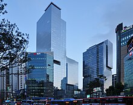

Samsung Group[3] (Korean: 삼성; Hanja: 三星; RR: samseong [samsʌŋ]; stylised as SΛMSUNG) is a South Korean multinational manufacturing conglomerate headquartered in Samsung Digital City, Suwon, South Korea.[1] It comprises numerous affiliated businesses,[1] most of them united under the Samsung brand, and is the largest South Korean chaebol (business conglomerate). As of 2024, Samsung has the world's fifth-highest brand value.[4] Samsung was founded by Lee Byung-chul in 1938 as a trading company. Over the next three decades, the group diversified into areas including food processing, textiles, insurance, securities, and retail. Samsung entered the electronics industry in the late 1960s and the construction and shipbuilding industries in the mid-1970s; these areas would drive its subsequent growth. Following Lee's death in 1987, Samsung was separated into five business groups – Samsung Group, Shinsegae Group, CJ Group, Hansol Group, and JoongAng Group. Samsung industrial affiliates include Samsung Electronics, Samsung Heavy Industries, Samsung Engineering and Samsung C&T Corporation. Other subsidiaries include Samsung Life Insurance and Cheil Worldwide. Notable Samsung industrial affiliates include Samsung Electronics (the world's largest information technology company, consumer electronics maker and chipmaker measured by 2017 revenues),[5][6] Samsung Heavy Industries (the world's second largest shipbuilder measured by 2010 revenues),[7] and Samsung Engineering and Samsung C&T Corporation (respectively the world's 13th and 36th largest construction companies).[8] Other notable subsidiaries include Samsung Life Insurance (the world's 14th largest life insurance company),[9] Samsung Everland (operator of Everland Resort, the oldest theme park in South Korea)[10] and Cheil Worldwide (the world's 15th largest advertising agency, as measured by 2012 revenues).[11][12]
Meaning of the name According to Samsung's founder, the meaning of the Korean hanja Samsung (三星) is three stars. The three stands for something big, numerous and powerful,[13] while stars stands for everlasting or eternal.[14][15]

1938–1970 Lee Byung-chul, founder of Samsung In 1938, during Japanese-ruled Korea, Lee Byung-chul (1910–1987) of a large landowning family in the Uiryeong county moved to nearby Daegu city and founded Mitsuboshi Trading Company (株式会社三星商会 (Kabushiki gaisha Mitsuboshi Shōkai)), or Samsung Sanghoe (주식회사 삼성상회). Samsung started out as a small trading company with forty employees located in Su-dong (now Ingyo-dong).[16] It dealt in dried fish,[16] locally-grown groceries and noodles.[17] The company prospered and Lee moved its head office to Seoul in 1947. When the Korean War broke out, he was forced to leave Seoul. He started a sugar refinery in Busan named Cheil Jedang. In 1954, Lee founded Cheil Mojik, a textiles company, and built the first plant in Chimsan-dong, Daegu. It was the largest woollen mill in the country at the time of construction.[18] Samsung diversified into many different areas. Lee sought to establish Samsung as a leader in a wide range of industries. Samsung moved into lines of business such as insurance, securities, and retail. In 1947, Cho Hong-jai, the Hyosung group's founder, jointly invested in a new company called Samsung Mulsan Gongsa, or the Samsung Trading Corporation, with the Samsung's founder Lee Byung-chul. The trading firm grew to become the present-day Samsung C&T Corporation. After a few years, Cho and Lee separated due to differences in management style. Cho wanted a 30 equity share. Samsung Group was separated into Samsung Group and Hyosung Group, Hankook Tire and other businesses.[19][20] In the late 1960s, Samsung Group entered the electronics industry. It formed several electronics-related divisions, such as Samsung Electronics Devices, Samsung Electro-Mechanics, Samsung Corning and Samsung Semiconductor & Telecommunications, and opened the facility in Suwon. Its first product was a black-and-white television set.[21] Byung-chul was also the owner of the Tongyang Broadcasting Company, a private radio and television company that existed from 1964 to 1980, shut down after the Korean government reviewed the number of media outlets allowed.[22] TBC allowed an early success thanks to its connections to Samsung, boosting the sale of its television sets.[23] 1970–1990 The SPC-1000, introduced in 1982, was Samsung's first personal computer (sold in the Korean market only) and used an audio cassette tape to load and save data – the floppy drive was optional.[24] In 1980, Samsung acquired the Gumi-based Hanguk Jeonja Tongsin and entered telecommunications hardware. Its early products were switchboards. The facility was developed into the telephone and fax manufacturing systems and became the center of Samsung's mobile phone manufacturing. They have produced over 800 million mobile phones to date.[25] The company grouped them together under Samsung Electronics in the 1980s. After Lee, the founder's death in 1987, Samsung Group was separated into five business groups – Samsung Group, Shinsegae Group, CJ Group, Hansol Group and the JoongAng Group.[26] Shinsegae (discount store, department store) was originally part of Samsung Group, separated in the 1990s from the Samsung Group along with CJ Group (Food/Chemicals/Entertainment/logistics), Hansol Group (Paper/Telecom), and the JoongAng Group (Media). Today these separated groups are independent and they are not part of or connected to the Samsung Group.[27] One Hansol Group representative said, "Only people ignorant of the laws governing the business world could believe something so absurd", adding, "When Hansol separated from the Samsung Group in 1991, it severed all payment guarantees and share-holding ties with Samsung affiliates." One Hansol Group source asserted, "Hansol, Shinsegae, and CJ have been under independent management since their respective separations from the Samsung Group". One Shinsegae department store executive director said, "Shinsegae has no payment guarantees associated with the Samsung Group".[27] In the 1980s, Samsung Electronics began to invest heavily in research and development, investments that were pivotal in pushing the company to the forefront of the global electronics industry. In 1982, it built a television assembly plant in Portugal; in 1984, a plant in New York; in 1985, a plant in Tokyo; in 1987, a facility in England; and another facility in Austin, Texas, in 1996. As of 2012, Samsung has invested more than US$13 billion in the Austin facility, which operates under the name Samsung Austin Semiconductor. This makes the Austin location the largest foreign investment in Texas and one of the largest single foreign investments in the United States.[28][29] In 1987, United States International Trade Commission found that the Samsung Group of South Korea unlawfully sold computer chips in the United States without licenses from the chip inventor, Texas Instruments Inc.[30] 1990–2000 Since 1990, Samsung has increasingly globalised its activities and electronics; in particular, its mobile phones and semiconductors have become its most important source of income. It was in this period that Samsung started to rise as an international corporation in the 1990s. Samsung's construction branch was awarded contracts to build one of the two Petronas Towers in Malaysia, Taipei 101 in Taiwan and the Burj Khalifa in United Arab Emirates.[31] In 1993, Lee Kun-hee sold off ten of Samsung Group's subsidiaries, downsized the company, and merged other operations to concentrate on three industries: electronics, engineering and chemicals. In 1996, the Samsung Group reacquired the Sungkyunkwan University foundation.[32] Samsung became the world's largest producer of memory chips in 1992 and is the world's second-largest chipmaker after Intel (see Worldwide Top 20 Semiconductor Market Share Ranking Year by Year).[33] In 1995, it created its first liquid-crystal display screen. Samsung grew to be the world's largest manufacturer of liquid-crystal display panels. Ten years later, Sony, which had not invested in large-size TFT-LCDs, contacted Samsung to cooperate, and, in 2006, S-LCD was established as a joint venture between Samsung and Sony in order to provide a stable supply of LCD panels for both manufacturers. S-LCD was owned by Samsung (50% plus one share) and Sony (50% minus one share) and operates its factories and facilities in Tanjung, South Korea. As of 26 December 2011, it was announced that Samsung had acquired the stake of Sony in this joint venture.[34] Compared to other major Korean companies, Samsung survived the 1997 Asian financial crisis relatively unharmed. However, Samsung Motor was sold to Renault at a significant loss. As of 2010, Renault Samsung is 80.1 per cent owned by Renault and 19.9 per cent owned by Samsung. Additionally, Samsung manufactured a range of aircraft from the 1980s to the 1990s. The company was founded in 1999 as Korea Aerospace Industries (KAI), the result of a merger between then three domestic major aerospace divisions of Samsung Aerospace, Daewoo Heavy Industries and Hyundai Space and Aircraft Company. However, Samsung still manufactures aircraft engines and gas turbines.[35] 2000–present The prominent Samsung sign in Times Square, New York City In 2000, Samsung R&D opened a development center in Warsaw, Poland.[36] Its work began with set-top-box technology before moving into digital TV and smartphones. The smartphone platform was developed with partners, officially launched with the original Samsung Solstice[37] line of devices and other derivatives in 2008, which was later developed into Samsung Galaxy line of devices including Notes, Edge and other products. The Samsung Group's chairman, Lee Kun-hee (left), with South Korean President Park Geun-hye, 2013 In 2007, former Samsung chief lawyer Kim Yong Chul claimed that he was involved in bribing and fabricating evidence on behalf of the group's chairman, Lee Kun-hee, and the company. Kim said that Samsung lawyers trained executives to serve as scapegoats in a "fabricated scenario" to protect Lee, even though those executives were not involved. Kim also told the media that he was "sidelined" by Samsung after he refused to pay a $3.3 million bribe to the U.S. Federal District Court judge presiding over a case where two of their executives were found guilty on charges related to memory chip price-fixing. Kim revealed that the company had raised a large number of secret funds through bank accounts illegally opened under the names of up to 1,000 Samsung executives – under his own name, four accounts were opened to manage 5 billion won.[38] In 2010, Samsung[who?] announced a ten-year growth strategy centered around five businesses.[39] One of these businesses was to be focused on biopharmaceuticals, to which has committed ₩2.1 trillion.[40] In first quarter of 2012, Samsung Electronics became the world's largest mobile phone maker by unit sales, overtaking Nokia, which had been the market leader since 1998.[41][42] On 24 August 2012, nine American jurors ruled that Samsung Electronics had to pay Apple $1.05 billion in damages for violating six of its patents on smartphone technology. The award was still less than the $2.5 billion requested by Apple. The decision also ruled that Apple did not violate five Samsung patents cited in the case.[43] Samsung decried the decision saying that the move could harm innovation in the sector.[44] It also followed a South Korean ruling stating that both companies were guilty of infringing on each other's intellectual property.[45] In first trading after the ruling, Samsung shares on the KOSPI fell 7.7%, the largest fall since 24 October 2008, to 1,177,000 South Korean won.[46] Apple then sought to ban the sales of eight Samsung phones (Galaxy S 4G, Galaxy S2 AT&T, Galaxy S2 Skyrocket, Galaxy S2 T-Mobile, Galaxy S2 Epic 4G, Galaxy S Showcase, Droid Charge and Galaxy Prevail) in the United States, but this was denied by the court.[47][48] As of 2013, the Fair Trade Commission of Taiwan is investigating Samsung and its local Taiwanese advertising agency for false advertising. The case was commenced after the commission received complaints stating that the agency hired students to attack competitors of Samsung Electronics in online forums.[49] Samsung Taiwan made an announcement on its Facebook page in which it stated that it had not interfered with any evaluation report and had stopped online marketing campaigns that constituted posting or responding to content in online forums.[50] In 2015, Samsung has been granted more U.S. patents than any other company. The company received 7,679 utility patents through 11 December.[51] The Galaxy Note 7 smartphone went on sale on 19 August 2016.[52] However, in early September 2016, Samsung suspended sales of the phone and announced an informal recall. This occurred after some units of the phones had batteries with a defect that caused them to produce excessive heat, leading to fires and explosions. Samsung replaced the recalled units of the phones with a new version; however, it was later discovered that the new version of the Galaxy Note 7 also had the battery defect. Samsung recalled all Galaxy Note 7 smartphones worldwide on 10 October 2016, and permanently ended production of the phone the following day.[53][54][55] In 2018, they inaugurated the world's largest mobile manufacturing facility in Noida, India, in the presence of Indian Prime Minister Narendra Modi and South Korean President Moon Jae-in.[56][57] In 2023, Samsung announced its decision to reduce the production of memory chips. This action is on account of the company's projected 96% decline in quarterly operating profit - a 600 million won decline from the 14 trillion won in 2022. The said drop can be attributed to the weak demand after COVID and a slowing global economy. Despite this decision, the company's shares increased by more than 4%.[58] Samsung has been the top two applicant for PCT filled patents in 2022 and 2023 worldwide.[59]